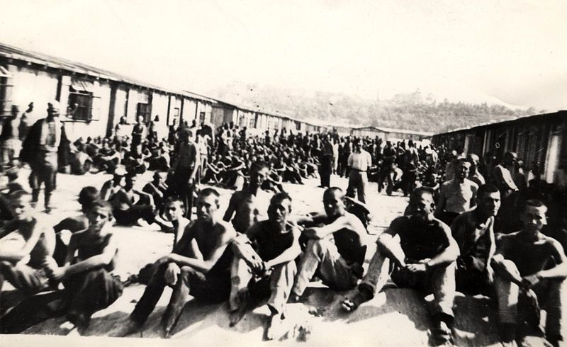
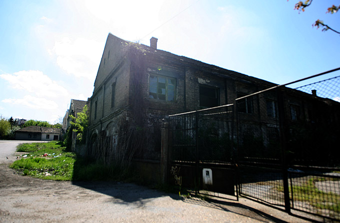
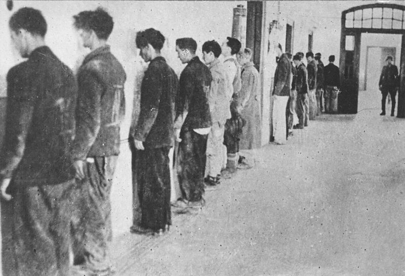
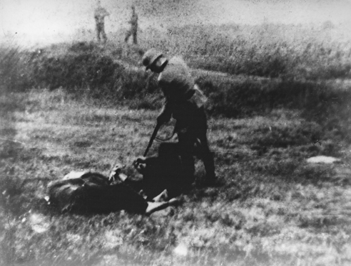

<!DOCTYPE html>
<html>
  <head>
    <title>Beograd pamti</title>
	<meta charset="UTF-8">
	<script src="https://maps.googleapis.com/maps/api/js?v=3.exp&sensor=false"></script>

	<style>
	html, body, #mesto-za-mapu {
		height: 100%;
		margin: 0px;
		padding: 0px;
	}
	.gm-style-iw img {
		width: 100%;
	}
	.gm-style-iw h2 {
		padding-top:0;
		margin-top:0;
	}
	.gm-style-iw span {
		color:gray;
		font-weight:bold;
	}
	</style>

</head>
<body>

	<div id="mesto-za-mapu"></div>
	
<script>
//globalne varijable
var mapa;
var MOJ_TIP_MAPE = 'custom_style';
var centar = new google.maps.LatLng(44.816667, 20.466667);

var sajmiste = new google.maps.LatLng(44.813518, 20.443601); //visina, širina
var markerSajmiste;
var infoSajmiste;

var banjica = new google.maps.LatLng(44.771443, 20.467342); 
var markerBanjica;
var infoBanjica;

var jajinci = new google.maps.LatLng(44.73048,20.488954); 
var markerJajinci;
var infoJajinci;

var topovskeshupe = new google.maps.LatLng(44.7858862,20.4690367);
var markerTopovskeSupe;
var infoTopovskeSupe;

var ciglana = new google.maps.LatLng(44.800128, 20.499725);
var markerCiglana;
var infoCiglana;

function postaviMapu() {

/** Podešavanje mape **/
	var bojeMape = [
	{
	  stylers: [
		{ hue: '#890000' },
		{ visibility: 'simplified' },
		{ gamma: 0.5 },
		{ weight: 0.5 }
	  ]
	},
	{
	  elementType: 'labels', //natpisi
	  stylers: [
		{ visibility: 'off' }
	  ]
	},
	{
	  featureType: 'water',
	  stylers: [
		{ color: '#890000' }
	  ]
	}
	];

	var postavkeMape = {
	zoom: 13,
	center: centar,
	mapTypeControl:false,
	mapTypeControlOptions: {
	  mapTypeIds: [google.maps.MapTypeId.ROADMAP, MOJ_TIP_MAPE]
	},
	mapTypeId: MOJ_TIP_MAPE
	};

	mapa = new google.maps.Map(document.getElementById('mesto-za-mapu'), postavkeMape);

	var ovajStil = {
	name: 'Crvena mapa'
	};
	var mojStilMape = new google.maps.StyledMapType(bojeMape, ovajStil);
	mapa.mapTypes.set(MOJ_TIP_MAPE, mojStilMape);

/** Staro Sajmište **/
  	//definiše markerSajmiste	
	markerSajmiste = new google.maps.Marker({
		position:sajmiste,
		map:mapa,
		icon:'slike/logor2.png',
		title: "Staro sajmište"
	});
	//definiše infoSajmiste
	infoSajmiste = new google.maps.InfoWindow({
		maxWidth:400, 
		content:"<h2>Logor Staro sajmište</h2><p><span>Opis:</span> logor smrti, stratište</p><p><span>Lokacija: </span>Blok 17, Novi Beograd</p><p><span>Danas: </span>razni objekti, zapušteno</p>"
	});
	google.maps.event.addListener(markerSajmiste, 'click', function() {
		zatvoriProzore();
		infoSajmiste.open(mapa,markerSajmiste);
	});

/** Ciglana **/	
	//definiše markerCiglana
	markerCiglana = new google.maps.Marker({
		position:ciglana,
		icon:'slike/logor2.png',
		title: "Milišićeva ciglana"
	});
	markerCiglana.setMap(mapa);
	//definiše infoCiglana
		maxWidth:400, 
		infoCiglana = new google.maps.InfoWindow({
		content:"<h2>Milišićeva ciglana</h2><p><span>Opis: </span>koncentracioni logor</p><p><span>Lokacija: </span>Zvezdara</p><p><span>Danas: </span>neobeleženo, park</p>"
	});
	google.maps.event.addListener(markerCiglana, 'click', function() {
		zatvoriProzore();
		infoCiglana.open(mapa,markerCiglana);
	});

/** Topovske šupe **/	
	//definiše markerTopovskeSupe
	markerTopovskeSupe = new google.maps.Marker({
		position:topovskeshupe,
		icon:'slike/logor2.png',
		title: "Topovske šupe"
	});
	markerTopovskeSupe.setMap(mapa);
	//definiše infoTopovskeSupe
	infoTopovskeSupe = new google.maps.InfoWindow({
		maxWidth:400, 
		content:"<h2>Topovske šupe</h2><p><span>Opis: </span>koncentracioni logor</p><p><span>Lokacija: </span>Autokomanda</p><p><span>Danas: </span>zapušteno, tržni centar u izgradnji</p>"
	});
	google.maps.event.addListener(markerTopovskeSupe, 'click', function() {
		zatvoriProzore();
		infoTopovskeSupe.open(mapa,markerTopovskeSupe);
	});
	
/** Banjica **/	
	//definiše markerBanjica
	markerBanjica = new google.maps.Marker({
		position:banjica,
		icon:'slike/logor2.png',
		title: "Logor Banjica"
	});
	markerBanjica.setMap(mapa);
	//definiše infoBanjica
	infoBanjica = new google.maps.InfoWindow({
		maxWidth:400, 	
		content:"<h2>Logor Banjica</h2><p><span>Opis: </span>zatvor, koncentracioni logor</p><p><span>Lokacija: </span>Banjica</p><p><span>Danas: </span>muzej, otvoren povremeno</p>"
	});
	google.maps.event.addListener(markerBanjica, 'click', function() {
		zatvoriProzore();	
		infoBanjica.open(mapa,markerBanjica);
	});

	
/** Jajinci **/		
	//definiše markerJajinci
	markerJajinci = new google.maps.Marker({
		position:jajinci,
		icon:'slike/logor2.png',
		title: "Strelište Jajinci"
	});
	markerJajinci.setMap(mapa);
	//definiše infoJajinci
	infoJajinci = new google.maps.InfoWindow({
		maxWidth:400, 	
		content:"<h2>Strelište Jajinci</h2><p><span>Opis: </span>stratište, mesto smrti</p><p><span>Lokacija: </span>Jajinci</p><p><span>Danas: </span>spomen park</p>"
	});
	google.maps.event.addListener(markerJajinci, 'click', function() {
		zatvoriProzore();
		infoJajinci.open(mapa,markerJajinci);
	});
	
	//zatvara sve prozore klikom
	google.maps.event.addDomListener(mapa, 'click', zatvoriProzore);	

	//postavlja dugme u uglu	
	var pocetnoDugmePodeok = document.createElement('div');
	var pocetnoDugme = new Dugme(pocetnoDugmePodeok, mapa);
	mapa.controls[google.maps.ControlPosition.TOP_RIGHT].push(pocetnoDugmePodeok);  
	
} //kraj postaviMapu

function zatvoriProzore(){
	var prozori = [infoSajmiste,infoBanjica,infoJajinci,infoTopovskeSupe,infoCiglana];
	for(var i = 0; i < prozori.length; i++) {
		if (prozori[i]) {
			prozori[i].close();
		}			
	}
} //kraj zatvoriProzore
		
// definiše Dugme
function Dugme(dugmePodeok, mapa) {
  dugmePodeok.style.padding = '5px';
  var dugmePocetna = document.createElement('div');
  dugmePocetna.style.backgroundColor = 'white';
  dugmePocetna.style.border='1px solid';
  dugmePocetna.style.cursor = 'pointer';
  dugmePocetna.style.textAlign = 'center';
  dugmePocetna.title = 'Centar';
  dugmePodeok.appendChild(dugmePocetna);
  var tekstPodeok = document.createElement('div');
  tekstPodeok.style.fontFamily='Arial,sans-serif';
  tekstPodeok.style.fontSize='12px';
  tekstPodeok.style.paddingLeft = '4px';
  tekstPodeok.style.paddingRight = '4px';
  tekstPodeok.innerHTML = '<b>Centar<b>'
  dugmePocetna.appendChild(tekstPodeok);
  // klikom na dugme ide na centar
  google.maps.event.addDomListener(dugmePocetna, 'click', function() {
  mapa.setCenter(centar)
  });
} //kraj Dugme

google.maps.event.addDomListener(window, 'load', postaviMapu);

</script>
</body>
</html>